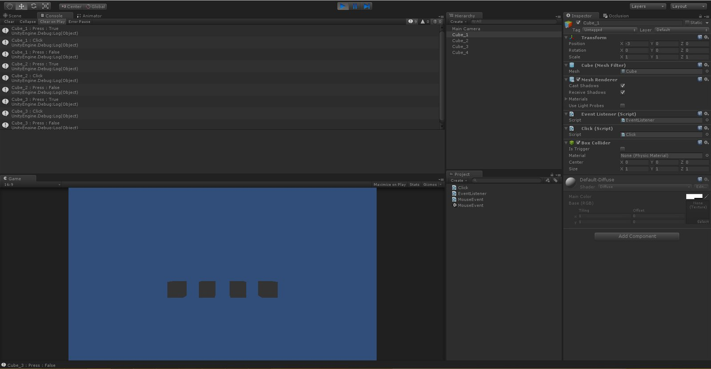

這幾天看了些 NGUI 的東西
順便了解了 NGUI 中 UIEventListener 是如何運作的
發現 NGUI 中是把滑鼠事件全部委託給 UIEventListener 處理
為什麼要這麼做呢
假使我們有數個 UI Button 等著被玩家點擊、按壓、停留
那麼我們就必須在每個 Button 上都寫上判斷狀態的 Code
這樣會導致程式的可讀性降低
所以在 NGUI 中他所使用的方法
就是將所有的滑鼠判斷委託給一個事件接收器
當判斷條件達成時
會觸發事件接收器裡的程式
這次我把 NGUI 中的這一部份拆解出來
做成了針對物體的事件接受器
首先新增一個 EventListener.cs
這個 Script 主要是用來接收各種滑鼠事件
using UnityEngine;
public class EventListener : MonoBehaviour
{
public delegate void VoidDelegate(GameObject go);
public delegate void BoolDelegate(GameObject go, bool enable);
public VoidDelegate onClick;
public BoolDelegate onHover;
public BoolDelegate onPress;
void OnClick()
{
if(onClick != null)
onClick(gameObject);
}
void OnHover(bool isHover)
{
if(onHover != null)
onHover(gameObject, isHover);
}
void OnPress(bool isPressed)
{
if(onPress != null)
onPress(gameObject, isPressed);
}
public static EventListener Get(GameObject go)
{
EventListener listener = go.GetComponent<EventListener>();
if(listener == null)
listener = go.AddComponent<EventListener>();
return listener;
}
}這裡要先提一下 delegate (委託)
具體的用法就不多加說明
簡單來說就是將程式委託給 VoidDelegate 以及 BoolDelegate
當我們呼叫 OnClick 、 OnHover 、 OnPress時
程式會執行委託中的所有程式
接著新增一個 Click.cs
這裡是用來實現滑鼠點擊及滑鼠按壓的範例
using UnityEngine;
using System.Collections;
public class Click : MonoBehaviour
{
void Awake()
{
EventListener.Get(gameObject).onClick += ObjectOnClick;
EventListener.Get(gameObject).onPress += ObjectOnPress;
}
private void ObjectOnClick(GameObject go)
{
Debug.Log(gameObject.name + " : Click");
}
private void ObjectOnPress(GameObject go, bool isPress)
{
Debug.Log(gameObject.name + " : Press : " + isPress);
}
}可以看到 EventListener.Get( gameObject ).onClick += ObjectOnClick 這行
委託就是在這裡實現的
當然看到 += 代表了是可以複數委託的
接著就要來實現判斷
新增一個 MouseEvent.cs
using UnityEngine;
using System.Collections;
public class MouseEvent : MonoBehaviour
{
private RaycastHit m_hit;
private Ray m_ray;
private bool m_press = false;
void Update()
{
m_ray = Camera.main.ScreenPointToRay(Input.mousePosition);
if(Physics.Raycast(m_ray, out m_hit))
{
if(m_hit.collider.gameObject.GetComponent<EventListener>())
{
GameObject tempObject = m_hit.collider.gameObject;
EventListener tempListener = tempObject.GetComponent<EventListener>();
tempObject.SendMessage("OnHover", true);
if(Input.GetMouseButtonDown(0))
{
m_press = true;
tempObject.SendMessage("OnPress", m_press);
}
if(Input.GetMouseButtonUp(0))
{
if(m_press)
{
m_press = false;
tempObject.SendMessage("OnClick");
tempObject.SendMessage("OnPress", m_press);
}
}
}
}
}
}先來介紹一下 Physics.Raycast
這段 API 代表了利用射線的方法去判斷是否有與物體相交
如果有交相就會將資料回傳到 hit 中
接著就是判斷目前所進行的滑鼠動作
來檢測相對應的判斷
如果該物體上的委託變數不為 null
就會回調該物體上的委託方法
而委託方法會執行 Click 中相對應的方法
接下來就來看看實際的效果如何
